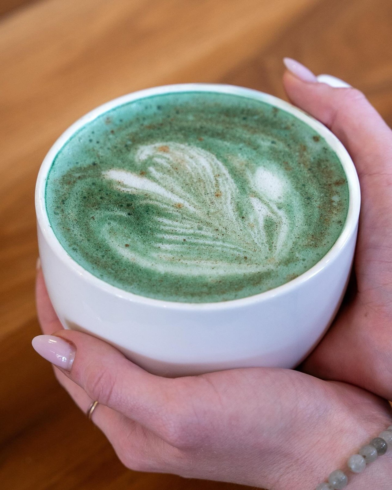
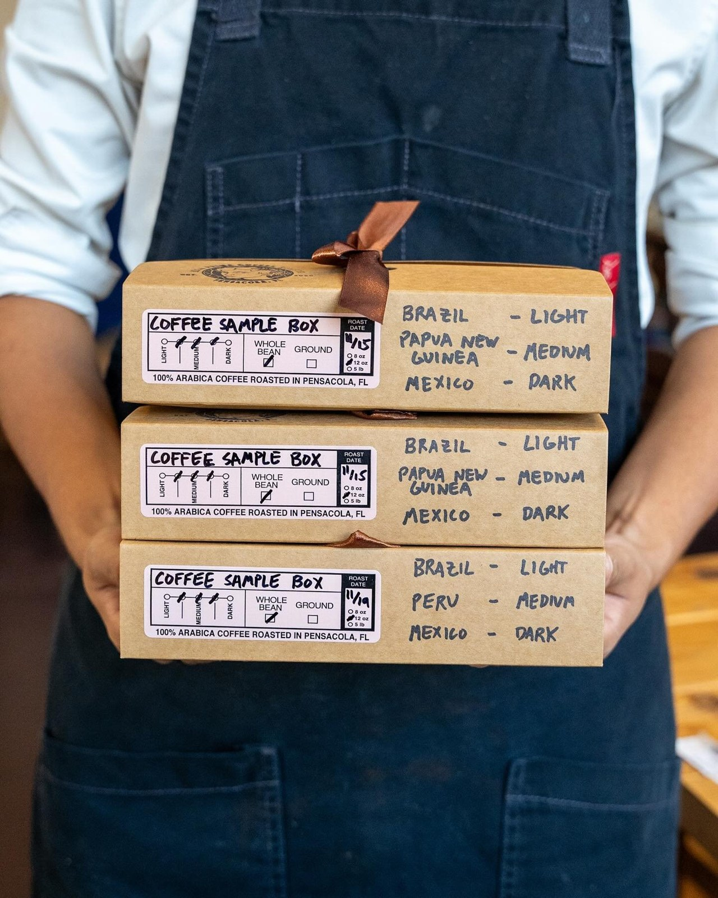
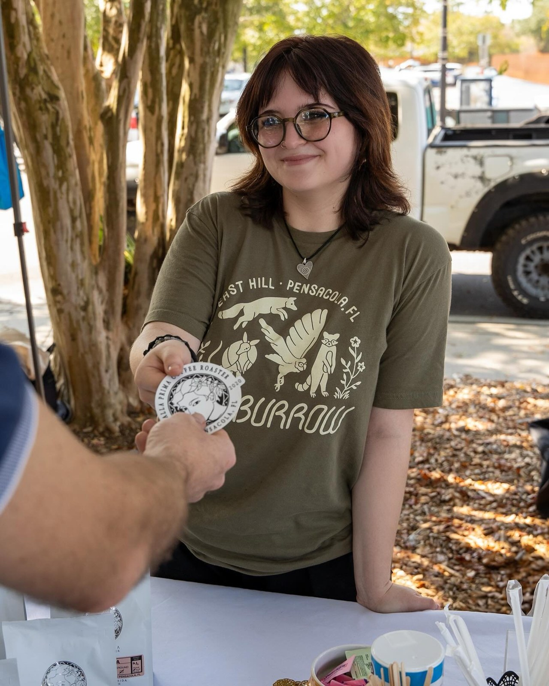

Signature lattes
Honey Cashew, Biscoff iced, Bouquet, and Picnic at the Prima.
Specialty Coffee Roastery, Pensacola FL
Specialty coffee roasted in house in Pensacola, with signature lattes, fresh pastries, roasting classes, and a local art gallery.
Micro-roastery and art gallery.

Alla Prima Coffee Roaster is a specialty coffee shop and micro-roastery in Pensacola, Florida, at 532 West Garden Street, founded in 2020 by artists Ivo Alcala and Summer Sevi. The shop roasts artisan coffee in house and serves signature lattes, including Honey Cashew, Biscoff iced, Bouquet, and Picnic at the Prima, plus pastries such as ham and cheese croissants, bacon cheddar turnovers, and biscuits and gravy. Alla Prima runs roasting classes and shows local fine art in the shop, with drive-thru service and online ordering. Hours are Monday to Friday 7:00 AM to 3:00 PM, Saturday 7:00 AM to 4:00 PM, and Sunday 9:00 AM to 4:00 PM. Call (850) 296-9444 or email contact@allaprimacoffee.com to ask about a class or an order.

Alla Prima roasts its artisan coffee in house and pours signature lattes like Honey Cashew and Biscoff iced. The shop also shows local fine art.
Honey Cashew, Biscoff iced, Bouquet, and Picnic at the Prima.
Artisan coffee roasted in house.
Ham and cheese croissants, bacon cheddar turnovers, and biscuits and gravy.
A gallery of local fine art inside the shop.
Alla Prima runs roasting classes and shows local fine art in the shop. Call (850) 296-9444 to ask about a class.

Photos on this page are the shop's own photos, from allaprimacoffee.com.
Address: 532 W Garden St, Pensacola, FL 32502
Hours: Monday to Friday 7:00 AM to 3:00 PM. Saturday 7:00 AM to 4:00 PM. Sunday 9:00 AM to 4:00 PM.
Phone: (850) 296-9444
Email: contact@allaprimacoffee.com
Call (850) 296-9444 Email contact@allaprimacoffee.com
Alla Prima Coffee Roaster serves Pensacola, FL. Questions? Call (850) 296-9444.